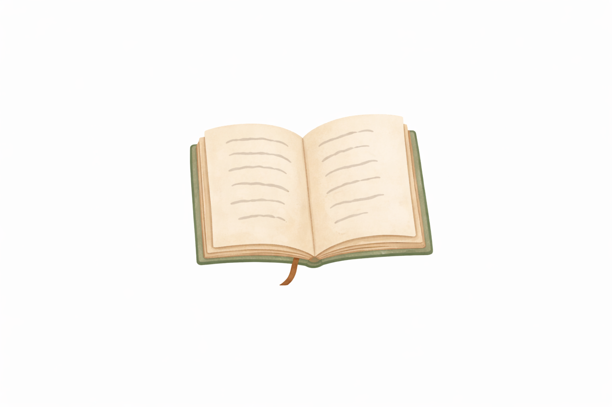
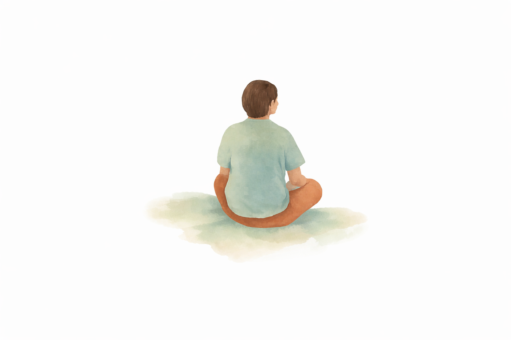
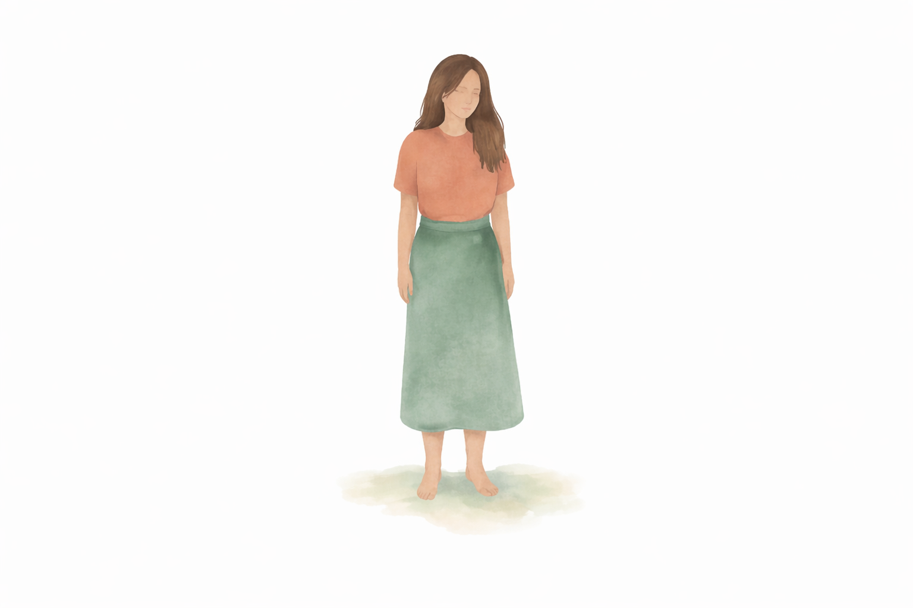

Honest tools for living with grief
Life after loss.
One day at a time.
Some days you need words. Some days you need one small thing you can do. There’s room for both here.
Free to read. Take what fits. Leave the rest.
Start where you are
What would help today?
You don’t need to work through everything.
Choose the place that feels closest.
I just need to
get through today.
A short checklist for when even the small things feel like a lot.
Start with one thing 02 / Finding wordsI don’t know
what to say.
Words to borrow when explaining yourself takes more than you have.
Find the words 03 / Living with lossI’m figuring out
life from here.
Reflections on carrying love, changing relationships, and being yourself.
Make some roomThe person behind GriefHacks
I’m Rachel.
You may know me
as Momma R.
I know what it is to have your life split into before and after.
I created GriefHacks to make room for the things that can be hard to say out loud, and to share practical ways to get through ordinary days after loss.
I write from lived experience. You’ll find personal stories, words you can borrow, and small things to try. You can disagree, skip something, or come back another day.
Read one of my storiesFrom the journal
For the things you can’t quite explain.

Personal story
Today, grief showed up again
An honest reflection on a day when grief arrives without warning.
Read the story
Personal story
When your world gets smaller after loss
The changes in friendships, family, and work that can follow a loss.
Read the story
Personal story
Carrying love forward
How the love you carry can continue to shape your everyday life.
Read the storySomething you can use
Small tools.
Real life.
A little structure for difficult mornings, conversations, and dates.
All practical tools4 simple resets for hard mornings
Small ways to begin a morning that already feels heavy.
What to say when grief feels hard to explain
Words for asking for help, setting boundaries, and being heard.
For anniversaries and difficult dates
Make a manageable plan for a day that carries extra weight.
A guide to explore in your own time
Finding your footing
in a changed life.
The Grief Orientation Framework brings together my perspective on choice, permanence, boundaries, and identity after loss.
You can read about the guide before deciding whether it’s right for you.
See what’s insidePaid guide · Available through Gumroad